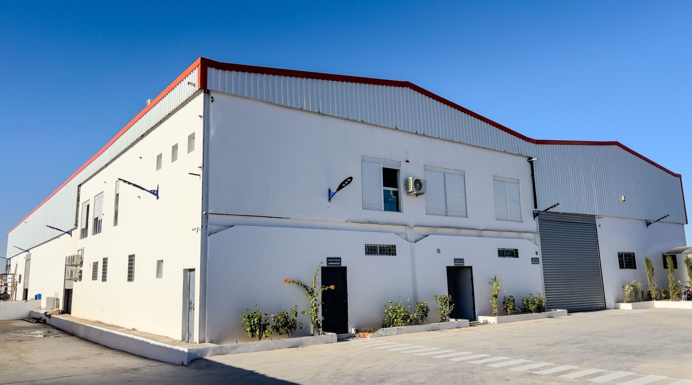
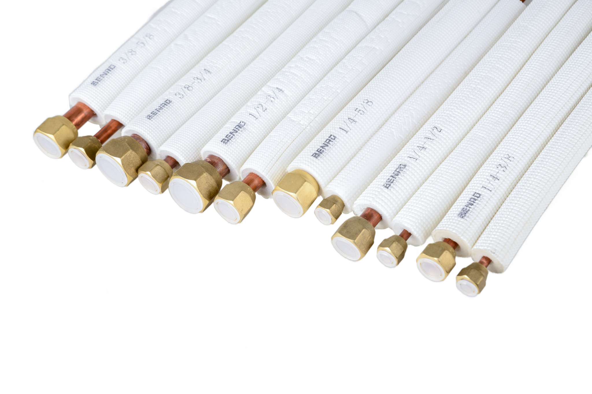
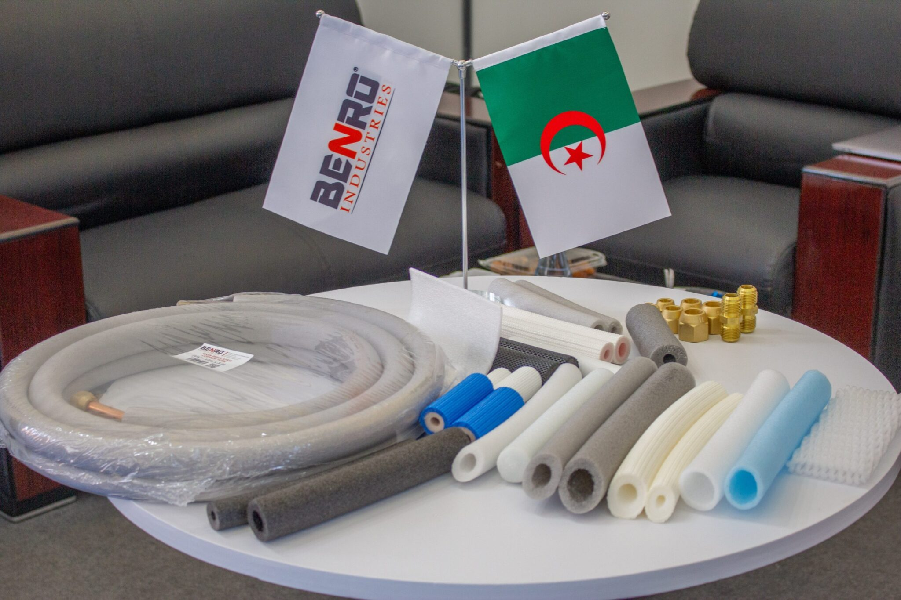

Guide
Guide
Benro Industries: A Trusted Name in HVAC Solutions
Why HVAC professionals across Algeria and beyond rely on Benro Industries for premium copper, aluminium and PE-foam components compliant with EN 12735.
Read articleInsights, technical guides and milestones from BENRO INDUSTRIES — HVAC components made in Algeria.
Guide
Why HVAC professionals across Algeria and beyond rely on Benro Industries for premium copper, aluminium and PE-foam components compliant with EN 12735.
Read article Technical
Technical
Everything HVAC contractors need to know about the EN 12735 standard: pressure ratings, comparison with ASTM B280, and BTU-loss benchmarks.
Read article Products
Products
How twin insulated aluminium tubes deliver thermal efficiency, lighter installs, and corrosion resistance for modern HVAC systems.
Read article Comparison
Comparison
Side-by-side comparison of insulated vs. standard copper tubes — BTU loss tables, sizing tips, and when to pick each one.
Read article
Guide
Insulated copper tubes, BTU sizing tables by room area, copper vs aluminium statistics, and how to pick the right tube for your AC.
Read article
Guide
Why insulated copper tubes are the backbone of modern HVAC systems — and how to pick the right one against EN12735 / ASTM.
Read article
RegionalWhy insulated aluminium tubes are the right answer for Algeria, Tunisia and Libya — sizing tables, certifications and installation tips.
Read article
Guide
Composition, certifications, applications, sizing, installation best practices, and a desert case study — all about insulated copper tubes.
Read article Products
Products
How BENRO INDUSTRIES’ 1070-series aluminium tubes — pre-insulated with PE foam — are reshaping modern HVAC installations.
Read article Products
Products
Closed-cell PE foam, low thermal conductivity, moisture resistance — how BENRO insulation pushes HVAC efficiency higher.
Read article
Entreprise
Pourquoi BENRO INDUSTRIES est le partenaire de référence pour des solutions HVAC durables et écoénergétiques en Algérie.
Read article Produits
Produits
Tubes en cuivre isolés EN 12735-1 — conductivité, résistance UV et installation facile pour vos kits de climatisation.
Read article Produits
Produits
Les tubes en cuivre européens EN 12735-1 : pourquoi ils restent le choix de référence pour la climatisation centrale.
Read article
GuideGuide complet pour choisir le kit de climatisation adapté à votre maison : BTU, SEER, types de tubes, et conseils BENRO.
Read article Events
Events
BENRO INDUSTRIES’ second SIVECC appearance — new partnerships across Tunisia and Libya, and standout feedback on BENRO-FLEX PE foam.
Read article Events
Events
The Wali of Ghardaïa and local representatives inaugurated BENRO INDUSTRIES’ expanded plant in the industrial zone on October 27, 2024.
Read article
EventsBENRO INDUSTRIES’ first SIVECC appearance — introducing BENRO-FLEX PE foam to the Algerian HVAC market and forging new partnerships.
Read article